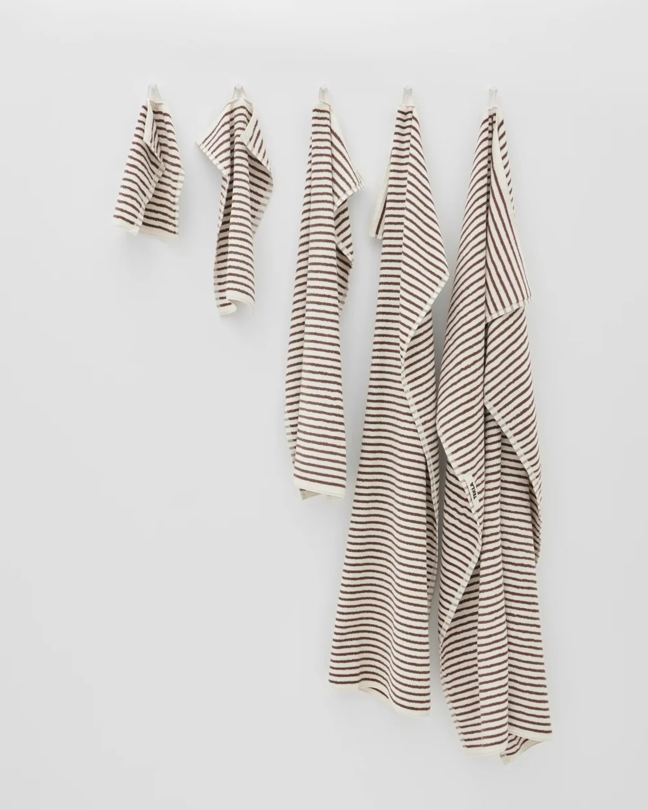
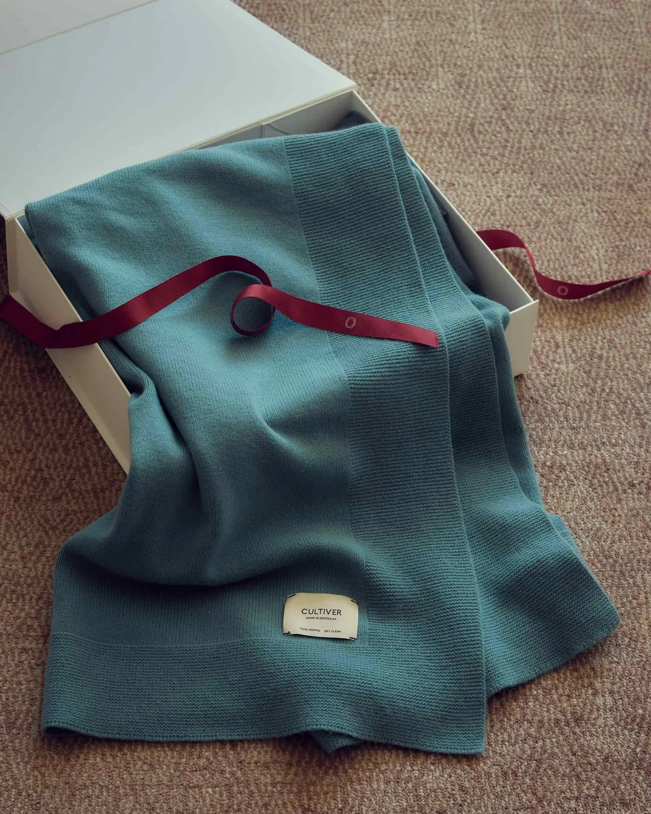

For the bath
Quiet colours.
A softer start.


Towels, robes and textiles
for everyday life at home.
After a shower. By the basin. Beside the bath.
Terry or waffle — find your texture.
Quiet colours.
A softer start.


The relief of a waffle weave. Soft terry loops. A loose fringe along the edge. Details that help you find the right piece.
By the bath, beside the basin.
Your favourite towels, always within reach.


Light with dark. Solid colours with stripes. Put together a combination that feels at home in your space.

A throw for a quiet evening. Towels for a new home. Everyday pieces that find a place in the life of someone close.

Towels, robes, throws and kitchen textiles. Brought together under the name Dina.Me — for your home, for yourself and for giving.
Textiles for life at home